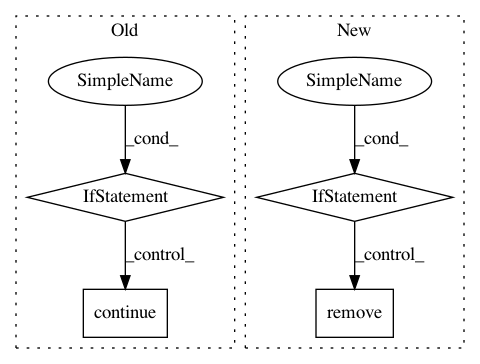

b1cfbe458c0bf123591348c54973d49297fd55ab,tools/alignments/jobs.py,Rename,_rename_faces,#Rename#Any#,1013
Before Change
rename_count = 0
for src, dst in tqdm(filename_mappings, desc="Renaming Faces"):
if src == dst:
logger.debug("Skipping rename of "%s" as destination name is same as souce", src)
continue
old = os.path.join(self._faces.folder, src)
new = os.path.join(self._faces.folder, dst)
if os.path.exists(new):
// This should never happen, but is a safety measure to prevent deletion of faces
After Change
logger.verbose("Renaming "%s" to "%s"", old, new)
os.rename(old, new)
rename_count += 1
if conflicts:
for old in tqdm(conflicts, desc="Renaming Faces"):
new = old[:-4] // Remove .tmp extension
if os.path.exists(new):
// This should only be running on faces. If there is still a conflict
// then the user has done something stupid, so we will delete the file and
// replace. They can always re-extract :/
os.remove(new)
logger.verbose("Renaming "%s" to "%s"", old, new)
os.rename(old, new)
return rename_count
class Sort():
In pattern: SUPERPATTERN
Frequency: 3
Non-data size: 4
Instances
Project Name: deepfakes/faceswap
Commit Name: b1cfbe458c0bf123591348c54973d49297fd55ab
Time: 2021-02-14
Author: 36920800+torzdf@users.noreply.github.com
File Name: tools/alignments/jobs.py
Class Name: Rename
Method Name: _rename_faces
Project Name: onnx/onnx-coreml
Commit Name: 660fbdb4facf97ddfb46b5a4f28a80e7db3aec43
Time: 2018-09-16
Author: aseem.elec@gmail.com
File Name: onnx_coreml/_transformers.py
Class Name: ConstantsToInitializers
Method Name: __call__
Project Name: onnx/onnx-coreml
Commit Name: 624d14284e35d6ce9c371c39f7e387002ccf4913
Time: 2018-08-25
Author: aseem.elec@gmail.com
File Name: onnx_coreml/_transformers.py
Class Name: ImageScalerRemover
Method Name: __call__